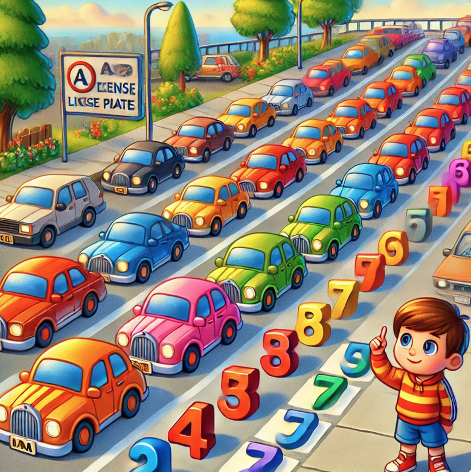

In your country, license plates are issued in a unique alphabetical order.
It started with the first car receiving the plate a, the second b, and so on until z.
Once they reached z, they began issuing plates like aa, ab, ..., and so forth, continuing alphabetically just like counting in base-26 with lowercase letters.
The sequence follows this logic: after z comes aa, then ab, and eventually az, ba, ..., until zz, after which the system continues to aaa, and so on.
One day, as you're walking down the street, a car drives past you. Curious about how many cars have been registered so far, you glance at its license plate and start to wonder:
"How many license plates were issued before this one?"
Given a license plate, determine how many cars have been assigned a license plate before (and including) this one.
ou are given a single line containing a string of length between 1 and 6 characters, composed only of lowercase English letters.
Print a single line with a number representing how many license plates have been issued, up to and including the given one.
a
1
aa
27
z
26
Content by Fernando Silva and Vanessa Silva (DCC/FCUP), copied from the original website.